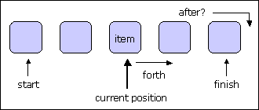
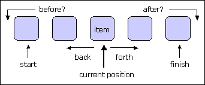
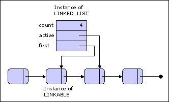

Many applications need sequential structures, also called linear structures, in particular
lists and circular chains. Apart from three classes describing individual list cells, all the classes involved are
descendants of class LINEAR, one of the deferred classes describing general traversal
properties and introduced in the chapter that described the general data structure
taxonomy. More precisely, all but one of the classes of interest for the present
discussion are descendants, direct or indirect, from a class called CHAIN which
describes general sequential structures possessing a cursor as well as insertion
properties. The exception is class COUNTABLE_SEQUENCE, which describes infinite
structures; all the others describe finite structures.
CHAIN is an heir of
SEQUENCE, which describes a more general notion of
sequence. SEQUENCE
is a descendant of LINEAR.
There are two main categories of sequential structures: some, called circular chains,
are cyclic; others, called lists, are not. Another distinction exists between dynamic
structures, which may be extended at will, and fixed ones, which have a bounded
capacity.
In all of the structures under review you may insert two or more occurrences of a
given item in such a way that the occurrences are distinguishable. In other words, the
structures are bags rather than just sets, although it is possible to use them to implement
sets.
The list and chain classes are characterized, for their traversal properties, as being linear and, more precisely, bilinear. In the traversal hierarchy, the relevant deferred classes are LINEAR and BILINEAR, introduced in the discussion of the general taxonomy.
LINEAR describes sequential structures that may be traversed one way. It introduces in particular the following features, illustrated on the figure below:
is_empty
and
not
after
not
off
not
is_empty.

fig.1: Linear Structure
There is also a procedure search with one argument, which determines whether the value of that argument appears in the structure at or after the current position, and if not makes after become true. This procedure is internally used by the default implementation of the has function (the general membership test) for linear structures. Like has for all containers, search uses object or reference equality depending on the value set for object_comparison.
An invariant property of LINEAR structures is that the current position may go off one step past the last item if any, but no further. The precondition of forth - not after - helps ensure this. The first item (if any) being at position 1, the maximum allowable position is count + 1, where count is the number of items.
BILINEAR describes linear structures which may be traversed both ways. It inherits from LINEAR and extends it with two new features which ensure complete symmetry between the two directions of movement:
For bilinear structures the position can range between 0 (not just 1) and count + 1. Query off is accordingly redefined so as to yield the value of after or before.
fig.2: Bilinear Structure
The redefinition of off
illustrates a general methodological advice about invariants: be careful about not over-constraining the invariant by including properties that may be
made more general in descendants. It might have been tempting to include in
LINEAR
an invariant clause of the form
off
=
is_empty
or
afterThis property, however, would be too constraining. More precisely, it is always true
that the right-hand side implies the left-hand-side: if a linear structure is either empty or
after, then it is off. But the converse is not true, since certain kinds of linear structure,
for example bilinear ones, may be off but neither empty nor after.
The actual invariant for class BILINEAR
is obtained in three stages. In class TRAVERSABLE
the feature off is deferred and a basic property of that feature is
expressed by the invariant clause
empty_constraint:
is_empty
implies
offIn
LINEAR, feature
off
is effected through an implementation which returns the
value of the expression is_empty
or after. The class adds an invariant clause which,
however, says less than the implementation to leave some room for variation:
after_constraint:
after
implies
off
Finally BILINEAR, an heir of
LINEAR, redefines
off
to return the value of the expression
before
or
after
and adds the invariant clause
before_constraint:
before
implies
off
The new implementation of
off
after
or
before
would not guarantee the
invariant clause inherited from TRAVERSABLE
were it not for another clause
introduced in BILINEAR:
empty_property:
is_empty
implies
(after
or
before)
which indicates that an empty bilinear structure must always be after or before − but not
both, however, as stated by the last new clause, the reason for which is discussed in
detail below:
not_both:
not
(after
and
before)
The flat-short form of BILINEAR
shows the
complete reconstructed invariant:
not_both:
not
(after
and
before)
empty_property:
is_empty
implies
(after
or
before)
before_constraint:
before
implies
off
after_constraint:
after
implies
off
empty_constraint:
is_empty
implies
off
For a more general form of
this scheme, applicable to
circular chains as well as
other linear structures,
replace off
by exhausted.
With the features shown above, a typical iteration mechanism on a non-empty linear
structure lin is of the form:
from
lin.start
some_optional_initializing_operation
(lin)
until
lin.off
loop
lin.some_action
(lin.item)
lin.forth
end
The value of
lin.off
is always true for an empty structure, so in this case the loop will, correctly, execute only its initialization actions if present.
This is a very common pattern, which you will find in the library classes themselves
(for example has
is implemented in this way) and many application clients. The iterator classes corresponding to linear structures (LINEAR_ITERATOR,
TWO_WAY_CHAIN_ITERATOR) turn this pattern and several related ones into actual
reusable routines.
For bilinear structures there is another traversal mechanism going backward rather
than forward; it is the same as above except that finish
replaces start
and back
replaces finish. The exit condition remains
off
since before, like
after, implies
off.
Getting the specification of after
and before
right, so that it will handle all cases properly, requires some care.
For every one of the structures under discussion there is a notion of current position,
which we may call the cursor position even though for the moment the cursor is a
virtual notion only. (Actual cursor objects will come later when we combine
LINEAR,
BILINEAR
and other classes from the traversal hierarchy with CURSOR_STRUCTURE
and other classes from the collection hierarchy.) The informal definition is that
after
is true if and only if the cursor - in this informal sense of a fictitious marker signaling the
current position - is one position after the last item, if any, and that
before
is true if and only if the cursor is one position before the first item.
When the cursor is on any of the items, after
and before
are false; after
holds when the cursor is to the right of the last item, and before when it is to the
left of the first item. This leaves open the question of what conventions to take for an empty structure. If
iteration schemes of the above type are to work, then after must be true for an empty
structure. For a bilinear structure, however, we should have total symmetry between the
two pairs of features
So for an empty list both before
and after
should be true. This scheme was used in early version of the Base libraries. It has some disadvantages, however; in particular it
is not compatible with the simple, symmetric properties:
after
= (index
=
count
+ 1)
before
= (index
= 0)
which express elementary definitions for after
and before
in terms of index, the current position, and count, the number of items (items being numbered from 1 to
count). For
an empty structure count
is zero, so if we want after
and before
to be both true in this case we have to sacrifice one of the above properties, since the first would imply index
to 1 and the second to 0. But again symmetry reigns supreme: we should either
keep both properties or renounce both. The solution was to renounce both and replace
them by slightly more complicated ones:
after
= (is_empty
or
(index
=
count
+ 1))
before
= (is_empty
or
(index
= 0))
When a structure is created, some initializations will have to be made; the default
initializations will usually lead to a value of 0 rather than 1 for index, although this
dissymetry is not apparent in the assertions. Although acceptable, this solution leads to small but unpleasant complications, in
particular frequent conditional instructions of the form
if
after
and
not
is_empty
then...
The solution finally retained for the Base libraries uses a different technique, which
has turned out to be preferable. The idea is to replace the conceptual picture by
one in which there are always two fictitious sentinel items. The two sentinel
items are only present conceptually. They are of course not taken into account for the computation of
count
and, although it is possible to conceive of an implementation which would actually
reserve space for them (for example in an array representation), none of the
implementations used in Base for the classes of this documentation and other descendants of
LINEAR
do. The only purpose of the sentinels is to provide two valid theoretical
cursor positions, which exist regardless of the number of actual (non-sentinel) items in
the structure.
The sentinel items always appear at positions 0 and count
+ 1; this property is true even if the structure is empty of items, in which case count
is zero. As a result, the following properties are part of the invariant:
0 <=
index
index
<=
count
+
1
before
= (index
= 0)
after
=
(index
=
count
+ 1)
not
(after
and
before)
The last property given indicates that a structure can never be both after
and before,
since even in an empty structure the two sentinels are still present, with the cursor on
one of them. For an empty structure, index will be zero by convention, so that
before
will be true and after
false. But this property is not reflected in any of the invariant clauses.
This discussion has illustrated some of the important patterns of reasoning that are frequently involved in serious object-oriented design. Among the lessons are four ideas which you may find useful in many different cases. First, consistency is once again the central principle. Throughout the design of a class library we must constantly ask ourselves:
Still deferred, classes SEQUENCE and
CHAIN provide the basis for all list and chain
classes, as well as for many trees and for dispensers.
SEQUENCE is constructed with the full extent of the
technique described in the discussion of the taxonomy: using multiple inheritance to
combine one class each from the access, traversal and storage hierarchy.
SEQUENCE indeed has three parents:
To the features of BILINEAR, SEQUENCE principally adds features for adding, changing and removing items. A few procedures in particular serve to insert items at the end:
Other procedures work on the current position:
SEQUENCE, however,
does not provide a procedure to insert an item at the current position, since not all
implementations of sequences support this possibility; you will find it in
descendants of SEQUENCE
seen below.
Yet another group of features are based on the first occurrence of a certain item, or
on all occurrences:
These procedures have various abstract preconditions: s.extendible for additions, s.writable for replacements, s.prunable for removals. Properties extendible and prunable characterize general categories of container structures rather than individual instances; for example extendible is always true for the “dynamic” structures seen below. In contrast, writable depends on the current status of each instance. In general writable will be true if there is an item at the current position.
Chains are sequences with a few more properties: items may be accessed through their
indices, and it is possible to define cursor objects attached to individual items.
Class CHAIN is an heir of SEQUENCE. It gets its access properties from
CURSOR_STRUCTURE
(which adds the notion of cursor to the features of ACTIVE,
already present in SEQUENCE) and is also an heir of
INDEXABLE. This ancestry
implies in particular the presence of the following features:
These features were called item and put in TABLE, but are renamed here to remove the conflict
with homonymous features from SEQUENCE.
Procedure put for chains is the version obtained from CURSOR_STRUCTURE,
which has the same effect as replace - replacing the value of the item at cursor position.
The put procedure from SEQUENCE
is renamed sequence_ put. This feature is not
exported by CHAIN, however, since its effect (adding an item at the end) may be
obtained through the simpler name extend.
By default, chains can only be extended at the end, through extend and sequence_ put. Of particular interest are those chains where clients can insert and remove items at any position. Such chains are said to be dynamic, and described by CHAIN’s heir DYNAMIC_CHAIN. The new features are predictable:
The class also provides implementations of prune, prune_all and wipe_out from COLLECTION. To make these implementations useful, it defines queries extendible and prunable so that they return the value true.
A chain is a finite sequential structure. This property means that items are arranged in a
linear order and may be traversed from the first to the last. To do this you may use a
loop of the form shown above, based on procedures start
and forth.
This property leaves room for several variants. In particular chains may be straight
or circular.
not
after
not
before
not_before_unless_empty:
before
implies
is_empty
not_after_unless_empty:
after
implies
is_empty
not_off_unless_empty:
off
implies
is_empty
For a list, the first
and last
items are fixed, and correspond to specific places in the
physical representation.
A circular chain also needs a notion of first
item, if only to enable a client to initiate
a traversal through procedure start. Similarly, there is a last
item - the one just before
the first in a cyclic traversal. (If the chain has just one item, it is both
first
and last.)
For circular chains, however, there is no reason why the first item should always
remain the same. One of the benefits that clients may expect from the use of a circular
structure is the ability to choose any item as the logical first. Class CIRCULAR
offers for that purpose the procedure set_start which designates the current cursor position as the first in the circular chain.
Subsequent calls to start
will move the cursor to this position; calls to finish
will move
the cursor to the cyclically preceding position. With most implementations, there will then be two notions of
first
position: the
logical first, which clients may freely choose through calls to set_start; and the physical
first, which results from the implementation. In a representation using an array with
indices from 1 to capacity, for example, the physical first is position 1, and the logical
first may be any index in the permitted range. In a linked representation, there will be a
cell first element
corresponding to the physical first, but the logical first is any cell in
the chain.
In such cases the circular chain classes have features called standard_first,
standard_last,
standard_start
and so on, which are not exported (so that you will not see them in the flat-short forms) but serve to implement visible features such
as first,
last
and forth. For example a possible implementation of
forth
for circular chains is
forth is
-- Move cursor to next item, cyclically.
do
standard_forth
if
standard_after
then
standard_start
end
if
isfirst
then
exhausted
:= True
end
end
The properties of
forth
for circular chains imply that a traversal loop written as
from
lin.start
until
lin.off
loop
...
lin.forth
end
would not work if lin is a non-empty circular structure:
off would never become true, so
that the loop would forever cycle over the structure’s items. The same would apply to a
loop using finish and back instead of start and forth. This behavior is the natural result of the semantics defined for off , forth and back
for circular structures. But it prevents us from using these features to perform a single
traversal which will visit every item once.
Using exhausted in lieu of off solves this problem. In class CIRCULAR,
exhausted
is an attribute which is set to false by start
and finish, and is set to true by
forth
when
advancing from the last item to the first and by back when backing up from the first
item to the last. So you should write the loop as
from
lin.start
some_optional_initializing_operation
(lin)
until
lin.exhausted
loop
...
lin.some_action
(lin.item)
lin.forth
end
This form is applicable to all linear structures, circular or not, since exhausted is introduced in class
LINEAR
as a function which returns the same value as off .Its redefinition into an attribute, modified by start, finish, forth and back, does not occur
until class CIRCULAR.
Because exhausted is more general than off , the iteration scheme just given (and its
equivalent going backwards) is preferable to the earlier one using off , especially if there
is any chance that the iteration might one day be applied to a lin structure that is
circular. Classes of the Iteration library, in particular LINEAR_ITERATOR, rely on this
scheme for iterating over linear structures.
For both lists and circular chains, the most flexible variants, said to be dynamic, allow
insertions and deletions at any position.
The corresponding classes are descendants of DYNAMIC_LIST
and DYNAMIC_CIRCULAR, themselves heirs of
DYNAMIC_CHAIN
studied above.
Class COUNTABLE_SEQUENCES, built by inheritance from COUNTABLE, LINEAR and ACTIVE, is similar to SEQUENCE but describes infinite rather than finite sequences.
We have by now seen the concepts underlying the linear structures of the Base libraries, especially lists and circular chains. Let us look at the techniques used to implement them.
Most of the implementations belong to one of four general categories, better described
as two categories with two subcategories each:
A linked implementation uses linked cells, each containing an item and a reference
to the next cell. One-way structures are described by classes whose names begin with
LINKED_, for example LINKED_LIST. Two-way structures use cells which, in
addition to the reference to the next cell, also include a reference to the previous one.
Their names begin with TWO_WAY_.
An arrayed implementation uses an array to represent a linear structure. If the array
is resizable, the corresponding class name begins with ARRAYED_, for example
ARRAYED_LIST; if not, the prefix is FIXED_.
A linked structure requires two classes: one, such as LINKED_LIST, describes the list proper; the other, such as LINKABLE, describes the individual list cells. The figure should help understand the difference; it describes a linked list, but the implementation of linked circular chains is similar.

fig.3: Linked list and linked cells
The instance of type LINKED_LIST shown at the top contains general information
about the list, such as the number of items (count) and a reference to the first element
(first). Because lists are active structures with a notion of current position,
there is also a reference active to the cell at the current position. An entity declared as
my_list: LINKED_LIST
[SOME_TYPE]
will have as its run-time value (if not void) a reference to such an object, which is really
a list header. The actual list content is given by the LINKABLE
instances, each of which contains a value of type SOME_TYPE and a reference to the next item, called
right.
Clearly, a header of type LINKED_LIST
[SOME_TYPE] will be associated with cells of type LINKABLE
[SOME_TYPE] for the same actual generic parameter SOME_TYPE.
Features such as active
and first
are used only for the implementation; they are not exported, and so you will not find them in the flat-short specifications,
although the figures show them to illustrate the representation technique.
A similar implementation is used for two-way-linked structures such as two-way
lists and two-way circular chains.
fig.4: Two way linked list
The classes describing list cells are descendants of a deferred class called CELL, whose features are:
Class LINKABLE
is an effective descendant of CELL, used for one-way linked
structures. It introduces features right, a reference to another cell to which the current
cell will be linked. Two-way linked structures use BI_LINKABLE, an heir of LINKABLE
which to the above features adds left, a reference to the preceding cell in the structure.
Caution: Do not confuse the item feature of CELL and its descendants, such as LINKABLE, with the item feature of the classes describing linear structures, such as LINKED_LIST. For a linked list, item returns the item at cursor position.
It may be implemented as
item: G is
-- Current item
do
Result := active.item
end
using the item feature of LINKABLE, applied to active.
If you look at the interfaces of one-way and two-way linked structures, you will notice
that they are almost identical. This is because it is possible to implement features such
as back for one-way structures such as described by LINKED_LIST
and LINKED_CIRCULAR. A simple implementation of back stores away a
reference to the current active item, executes start, and then performs forth until the item to the right of the
cursor position is the previous active.
Although correct, such an implementation is of course rather inefficient since it
requires a traversal of the list. In terms of algorithmic complexity, it is in O (count),
meaning that its execution time is on the average proportional to the number of items in
the structure. In contrast, forth is O (1), that is to say, takes an execution time bounded
by a constant.
Caution: As a consequence, you should not use one-way linked structures if you need to execute more than occasional back operations (and other operations requiring access to previous items, such as remove_left).
Two-way linked structures, such as those described by TWO_WAY_LIST and TWO_WAY_CIRCULAR, treat the two directions symmetrically, so that back will be just as efficient as forth. Hence the following important advice: If you need to traverse a linked structure both ways, not just left to right, use the TWO_WAY_ classes, not the LINKED_ versions. The TWO_WAY_ structures will take up more space, since they use BI_LINKABLE rather than LINKABLE cells, but for most applications this space penalty is justified by the considerable gains in time that will result if right-to-left operations are frequently needed.
Arrayed structures as described by ARRAYED_LIST,
FIXED_LIST and
ARRAYED_CIRCULAR
use arrays for their implementations. A list or circular chain of count items
may be stored in positions 1 to count of an array of capacity items, where capacity
>= count.
An instance of FIXED_LIST, as the name suggests, has a fixed number of items. In
particular:
In contrast, ARRAYED_LIST has almost the same interface as LINKED_LIST. In particular, it is possible to add items at the end using procedure extend; if the call causes the list to grow beyond the current array’s capacity, it will trigger a resizing. This is achieved by using the procedure force of class ARRAY to implement extend. ARRAYED_LIST even has the insertion procedures (put_front, put_left, put_right) and removal procedures (prune, remove, remove_left, remove_right) that apply to arbitrary positions and appear in the linked implementations. These procedures, however, are rather inefficient, since they usually require moving a whole set of array items, an O (count) operation. (Procedure extend does not suffer from this problem, since it is easy to add an item to the end of an array, especially if there is still room so that no resizing is necessary.)
Caution: The situation of these features in ARRAYED_LIST is similar to the situation of back in classes describing one-way linked structures: it is convenient to include them because they may be needed once in a while and an implementation exists; but using them more than occasionally may result in serious inefficiencies. If you do need to perform arbitrary insertions and removal, use linked structures, not arrayed ones.
Arrayed structures, however, use up less space than linked representations. So they are appropriate for chains on which, except possibly for insertions at the end, few insertion and removal operations or none at all are expected after creation. FIXED_LIST offers few advantages over ARRAYED_LIST. FIXED_LIST may be useful, however, for cases in which the fixed number of items is part of the specification, and any attempt to add more items must be treated as an error. For circular chains only one variant is available, ARRAYED_CIRCULAR, although writing a FIXED_ version would be a simple exercise.
For lists one more variant is available, combining some of the advantages of arrayed
and linked implementations:
MULTI_ARRAY_LIST. With this implementation a list is
divided into a number of blocks. Each block is an array, but the successive arrays are
linked.
The class COMPARABLE_STRUCT, an heir of
BILINEAR, is declared as
deferred class
COMPARABLE_STRUCT
[G ->
COMPARABLE]
inherit
BILINEAR
feature
...
As indicated by the constrained generic parameter it describes bilinear structures whose items may be compared by a total order relation.
Caution: Note that the class name, chosen for brevity’s sake, is slightly misleading: it is not the structures that are comparable but their items.
COMPARABLE_STRUCT
introduces the features min and max, giving access to
the minimum and maximum elements of a structure; these are always present for a finite
structure with a total order relation. SORTED_STRUCT, an heir of COMPARABLE_STRUCT, describes structures that
can be sorted; it introduces the query sorted and the command sort.
The deferred class PART_SORTED_LIST describes lists whose items are kept
ordered in a way that is compatible with a partial order relation defined on them. The
class is declared as
deferred class
PART_SORTED_LIST
[G ->
COMPARABLE]...
An implementation based on two-way linked lists is available through the effective
heir SORTED_TWO_WAY_LIST.
The deferred class SORTED_LIST, which inherits from
PART_SORTED_LIST, assumes that the order relation on G is a total order. As a result, the class is able to
introduce features min, max and median. Here too a a two-way linked list
implementation is available, through the effective class SORTED_TWO_WAY_LIST